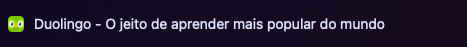
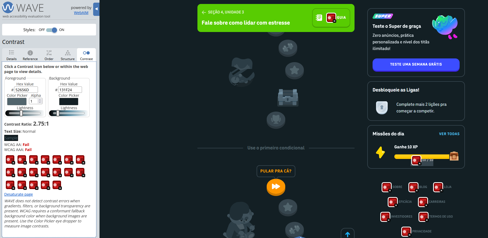
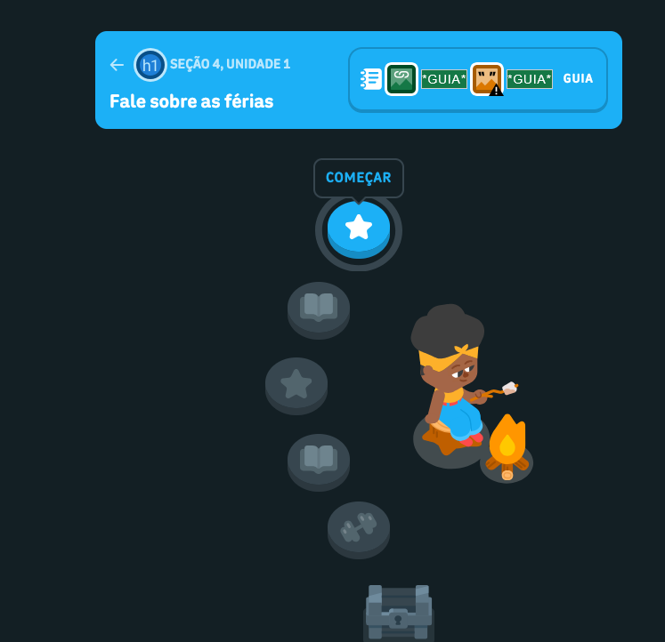
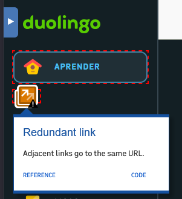
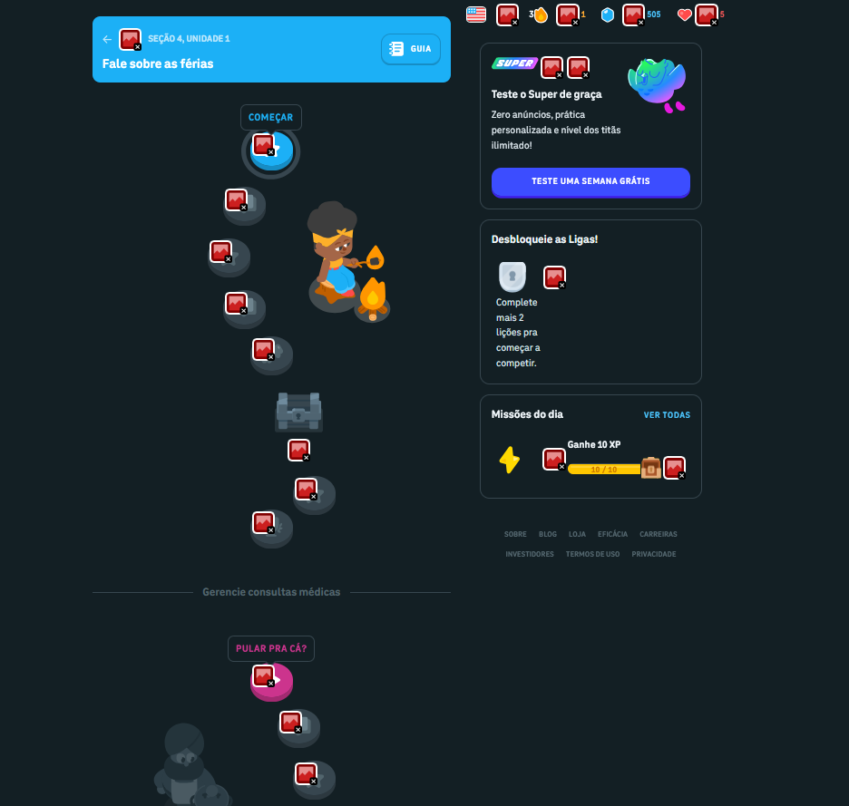
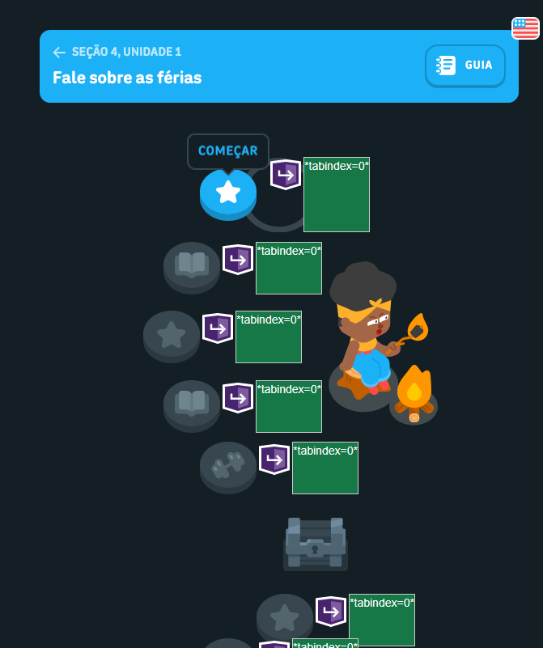

Eliezir
@EmPn9


WCAG 2.1 · versão desktop · WAVE · eMAG · IHC · IFAL · 2026.1


de usuários ativos por mês, em dezenas de idiomas.
Ofensivas, XP, ligas, vidas e o mascote Duo.
Interface colorida, lúdica e muito bem animada.
App de educação mais baixado do mundo e empresa aberta na NASDAQ.


Cada ícone vermelho é um problema pra quem usa leitor de tela, teclado ou tem baixa visão. Foi isso que a gente foi medir.


Diretrizes do W3C que definem, de forma testável, o que um site precisa cumprir pra ser acessível a todas as pessoas — base de leis no mundo todo (e do eMAG no Brasil).
O conteúdo precisa poder ser percebido — se você não vê ou não ouve, ainda assim recebe a informação.
alt em imagens · contraste suficiente · legendas · não depender só da cor
Dá pra navegar e usar tudo por qualquer meio, não só pelo mouse.
acesso total por teclado · foco visível · tempo suficiente · sem armadilhas
Conteúdo e interface são claros e previsíveis — nada de surpresa.
idioma definido · rótulos claros · erros explicados · comportamento previsível
Funciona com tecnologias assistivas (leitores de tela), hoje e no futuro.
HTML semântico · ARIA correto · compatível com leitores de tela
Mínimo. Falhas aqui bloqueiam o acesso.
Recomendado e exigido por lei — inclui o eMAG.
Máximo. Avançado, nem sempre aplicável.
.gov, mas serve de referência.Modelo de Acessibilidade em Governo Eletrônico, v3.1 (2014). Obrigatório p/ sites do governo federal.
Traduz a WCAG para recomendações práticas: marcação, comportamento, conteúdo, design, multimídia e formulários.

Inspeção manual guiada (acessoparatodos.com.br).
Avaliação automática (WebAIM) das telas.
Relatos reais de usuários com deficiência.
<title> fica estática com o slogan da marca em toda a SPA. Indo do painel pra Ligas ou Loja, o leitor de tela não anuncia a mudança de contexto.document.title a cada rota — ex.: "Ligas | Duolingo".
alt="" nas decorativas.

aria-label="Fechar lição" + ícone com aria-hidden.
<main>/<nav>, o leitor percorre cabeçalho, XP e vidas a cada questão.aria-label="Day" e aria-valuenow decimal (0.0138) — ilegível em voz alta.aria-disabled mas ainda recebem foco; o grupo se chama só "choice".alt="" quando já há texto; consolidar links iguais.
<div>, e tabindex bagunçando o foco. 🤦<button>; usar só tabindex="0" ou "-1".
div. 🙈div com role="button" e tabindex (4.1.2).| Perceptível (1.x) | Operável (2.x) | Compreensível (3.x) | Robusto (4.x) |
|---|---|---|---|
| 43 imagens sem alt · 20 contrastes · 1 alt redundante | 24 tabindex · 2 links-imagem sem alt · 1 link redundante · sem regiões de página nas atividades | Botão de lição sem rótulo — leitor anuncia só “botão” | 24 ARIA buttons não-nativos · ~26 aria-labels a verificar · progressbar sem contexto · aria-disabled inconsistente |
alt.<main>/<nav> nas telas de atividade.aria-disabled sem foco.Complementar com testes manuais e com usuários reais com deficiência.

WCAG 2.1 · w3.org · WAVE · wave.webaim.org · eMAG · gov.br